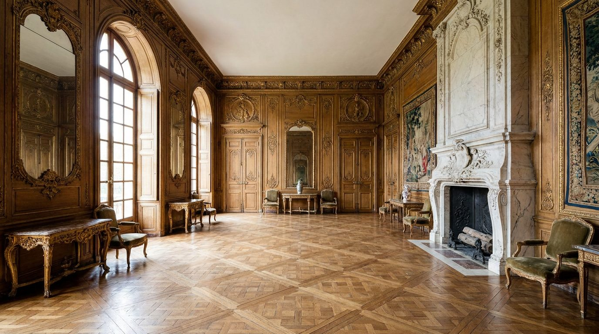

Atlante · FR-13 · Francia · Provincia
Castello classico con enfilade
Esempi · esterno e interno


Perché funziona
il massimo della scala per arredamento statement; utile per 1–2 immagini "hero" di campagna, non per l'intera serie.
Architettura · elementi riproducibili
- Enfilade di 3–5 saloni in asse, porte a doppio battente 3 m
- Boiserie scolpite e dorate, parquet de Versailles, caminetti in marmo
- HSP 4–6 m; cornici a mensole, specchiere, arazzi
- Lampadari in cristallo, consolle in marmo, sedute firmate
Luce
assiale, da finestre alte su un lato, con alternanza luce/ombra tra i vani; 5000–5500 K; dorature accese di taglio.
Prompt di generazione (EN)
Grand classical French château salon in enfilade, 5 m ceiling, carved gilded boiserie, parquet de Versailles, marble fireplace, crystal chandelier unlit, crimson damask drapes, antique console. Axial daylight from tall windows on the left, alternating bright and shadowed rooms, 5200 K, gilding lit at a grazing angle. 24 mm lens, f/6.3, camera at 1.6 m, strict one-point perspective through three doorways, no people, 3:2.
Errori tipici da controllarescala incoerente (mobili giganti o minuscoli); dorature ovunque; prospettiva non centrata.
Riferimenti reali
- Château de Vaux-le-Vicomte, Maincy (Seine-et-Marne), 1658–1661, costruito per Nicolas Fouquet; Le Vau, Le Brun, Le Nôtre apri ↗